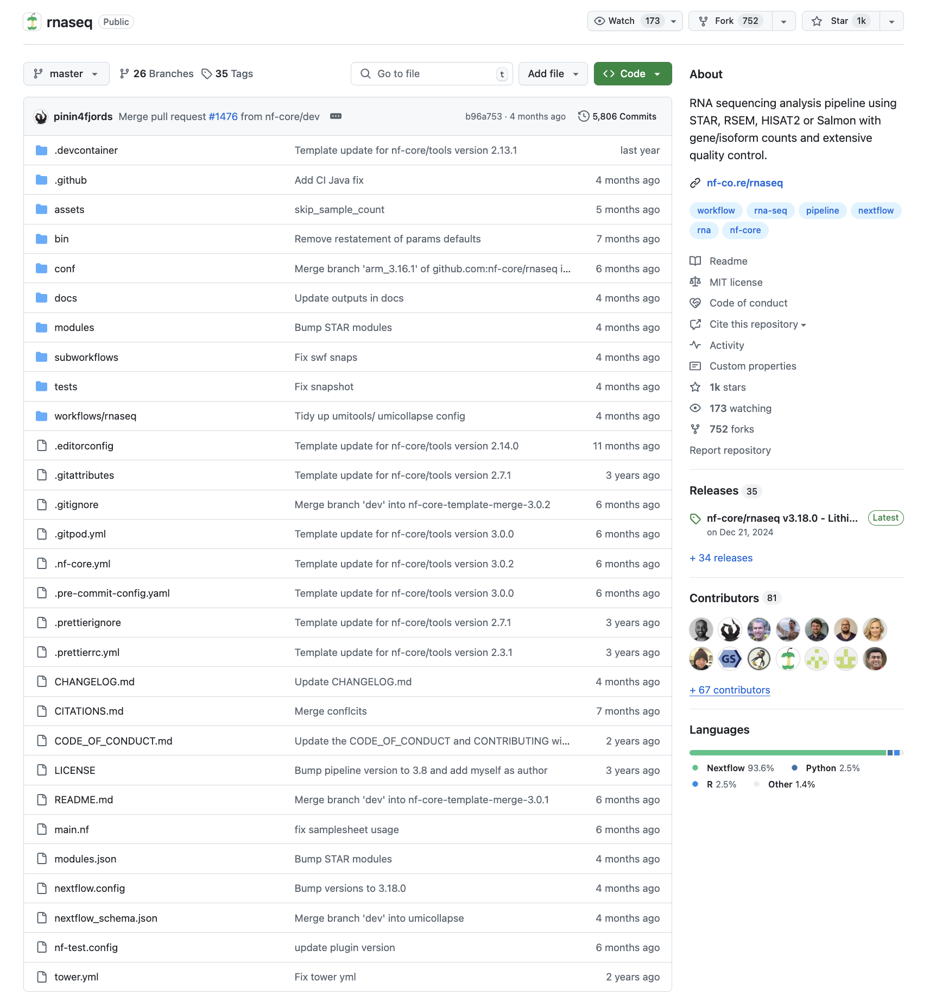

Introduction to nf-core
- Learn the core features and concepts of nf-core.
- Learn nf-core terminology.
- Use Nextflow to pull and run the
nf-core/testpipelineworkflow - Gain an understanding of pipeline template structure for
nf-core/rnaseq
1.2.1. What is nf-core?
nf-core is a community effort to collect a curated set of analysis workflows built using Nextflow.
nf-core provides a standardized set of best practices, guidelines, and templates for building and sharing bioinformatics workflows. These workflows are designed to be modular, scalable, and portable, allowing researchers to easily adapt and execute them using their own data and compute resources.
The community is a diverse group of bioinformaticians, developers, and researchers from around the world who collaborate on developing and maintaining a growing collection of high-quality workflows. These workflows cover a range of applications, including transcriptomics, proteomics, and metagenomics.
One of the key benefits of nf-core is that it promotes open development, testing, and peer review, ensuring that the workflows are robust, well-documented, and validated against real-world datasets. This helps to increase the reliability and reproducibility of bioinformatics analyses and ultimately enables researchers to accelerate their scientific discoveries.
nf-core is published in Nature Biotechnology: Nat Biotechnol 38, 276–278 (2020). Nature Biotechnology
Key Features of nf-core workflows
- Documentation
- nf-core workflows have extensive documentation covering installation, usage, and description of output files to ensure that you won’t be left in the dark.
- Stable Releases
- nf-core workflows use GitHub releases to tag stable versions of the code and software, making workflow runs totally reproducible.
- Packaged software
- Pipeline dependencies are automatically downloaded and handled using Docker, Singularity, Conda, or other software management tools. There is no need for any software installations.
- Portable and reproducible
- nf-core workflows follow best practices to ensure maximum portability and reproducibility. The large community makes the workflows exceptionally well-tested and easy to execute.
- Cloud-ready
- nf-core workflows are tested on AWS
1.2.2. Executing an nf-core workflow
The nf-core website has a full list of workflows and asssociated documentation to be explored.
Each workflow has a dedicated page that includes expansive documentation that is split into 7 sections:
- Introduction: an introduction and overview of the workflow
- Results: Example output files generated from the full test dataset
- Usage docs: Descriptions of how to execute the workflow
- Parameters: Grouped workflow parameters with descriptions
- Output docs: Descriptions and examples of the expected output files
- Releases & Statistics: Workflow version history and statistics
Since nf-core is a community development project, the code for a pipeline can change at any time. To ensure that you are using a specific version of a pipeline, you can use Nextflow’s built-in functionality to pull a workflow. The following command can be used to download and cache workflows from GitHub repositories:
nextflow pull nf-core/<pipeline>Nextflow run will also automatically pull the workflow if it was not already available locally:
nextflow run nf-core/<pipeline>Nextflow will pull the default git branch if a workflow version is not specified. This will be the master branch for nf-core workflows with a stable release. nf-core workflows use GitHub releases to tag stable versions of the code and software. You will always be able to execute a previous version of a workflow once it is released using the -revision or -r flag.
For this section of the workshop we will be using the nf-core/testpipeline as an example. Navigate back to your work directory and create a separate directory for this section.
mkdir ./nf_testpipeline && cd $_Exercise: Pull the nf-core/testpipeline pipeline
nextflow pull nf-core/testpipelineWhen running on your institutional compute remember to follow the requirements of your HPC, such as:
- Not running on the login node of the HPC
- Loading your required software (i.e. nextflow/singularity/apptainer)
1.2.3. Workflow structure
nf-core workflows start from a common template and follow the same structure. Although you won’t need to edit code in the workflow project directory, having a basic understanding of the project structure and some core terminology will help you understand how to configure its execution.
Let’s take a look at the code for the nf-core/rnaseq pipeline.

Notice that the typical nf-core workflow doesn’t contain just one .nf file, but instead contains multiple folders that categorise different elements of the workflow. Nf-core workflows typically consists of a main workflow file, main.nf, which launches the analysis workflow file workflows/<workflow>.nf that invokes the modules and subworkflows.
1.2.4. Modules
The modules folder contain both local and nf-core processes, each contained within their own tool folder inside a script called main.nf.

Look through the contents of modules/nf-core/bedtools/genomecov/main.nf. Notice that it only consists of a single process that will execute a single tool.
Recall the following components of a process:
- inputs: declares any inputs to the process, along with the variable qualifier
- outputs: declares any outputs of the process, along with the variable qualifier
- script: executes commands
Custom processes that are specific to a particular pipeline are stored inside the local folder. Nf-core modules that have already been tested and developed by the nf-core community are stored inside a separate nf-core folder. A full list of available modules can be seen here or on the nf-core modules GitHub repository.
These processes/modules can then be imported into an overarching analysis workflow file that chains each step together.
Exercise: How many modules are in nf-core/testpipeline? Are they local to the pipeline or are they stored in the nf-core modules GitHub repository? What are the names of the modules?
There are two modules in nf-core/testpipeline, fastqc and multiqc. Since the modules are stored inside the folder nf-core, they can are available on the nf-core modules GitHub repository.
1.2.5. Subworkflows
A subworkflow contains groups of modules that are used in combination with each other and have a common purpose. Subworkflows improve workflow readability and help with the reuse of modules within a workflow. The nf-core community also shares subworkflows in the nf-core subworkflows GitHub repository. Local subworkflows are workflow specific, and are not shared in the nf-core subworkflows repository.
Let’s take a look at the BAM_STATS_SAMTOOLS subworkflow:
//
// Run SAMtools stats, flagstat and idxstats
//
include { SAMTOOLS_STATS } from '../../../modules/nf-core/samtools/stats/main'
include { SAMTOOLS_IDXSTATS } from '../../../modules/nf-core/samtools/idxstats/main'
include { SAMTOOLS_FLAGSTAT } from '../../../modules/nf-core/samtools/flagstat/main'
workflow BAM_STATS_SAMTOOLS {
take:
ch_bam_bai // channel: [ val(meta), path(bam), path(bai) ]
ch_fasta // channel: [ path(fasta) ]
main:
ch_versions = Channel.empty()
SAMTOOLS_STATS ( ch_bam_bai, ch_fasta )
ch_versions = ch_versions.mix(SAMTOOLS_STATS.out.versions)
SAMTOOLS_FLAGSTAT ( ch_bam_bai )
ch_versions = ch_versions.mix(SAMTOOLS_FLAGSTAT.out.versions)
SAMTOOLS_IDXSTATS ( ch_bam_bai )
ch_versions = ch_versions.mix(SAMTOOLS_IDXSTATS.out.versions)
emit:
stats = SAMTOOLS_STATS.out.stats // channel: [ val(meta), path(stats) ]
flagstat = SAMTOOLS_FLAGSTAT.out.flagstat // channel: [ val(meta), path(flagstat) ]
idxstats = SAMTOOLS_IDXSTATS.out.idxstats // channel: [ val(meta), path(idxstats) ]
versions = ch_versions // channel: [ path(versions.yml) ]
}This subworkflow is comprised of the following modules:
These modules are imported using include, which specifies the name of the process to import, and the path to the module file.
The first input to this subworkflow (as indicated by take) is a tuple consisting of three elements – sample metadata, BAM file, BAM index file. The second input is a single fasta file. In this subworkflow, all processes are executed independently. SAMTOOLS_STATS, SAMTOOLS_FLAGSTAT, and SAMTOOLS_IDXSTATS can all be ran in parallel, since no process input is dependant on the output of a process output.
Also note that while we have a process and workflow scope definition, there is no subworkflow definition – it is simply defined using workflow.
1.2.6. Viewing workflow parameters
Every nf-core workflow has a full list of parameters on the nf-core website, in the Parameters tab. When viewing these parameters online, you will also be shown a description and the parameter type. Some parameters will have additional text to help you understand when and how a parameter should be used.

Pipeline parameters and their descriptions can also be viewed on the command line using the run command with the --help:
nextflow run -r 3.18.0 nf-core/rnaseq --helpIn the example above, the parameters for rnaseq pipeline version 3.14.0 is being viewed.
Exercise: View the parameters for version 2.0 of the nf-core/testpipeline workflow using the command line
The nf-core/testpipeline workflow parameters for version 2.0can be printed using the nextflow run command along with the --help option:
nextflow run -r 2.0 nf-core/testpipeline --help N E X T F L O W ~ version 24.10.5
Launching `https://github.com/nf-core/testpipeline` [angry_aryabhata] DSL2 - revision: 28e764e281 [2.0]
------------------------------------------------------
,--./,-.
___ __ __ __ ___ /,-._.--~'
|\ | |__ __ / ` / \ |__) |__ } {
| \| | \__, \__/ | \ |___ \`-._,-`-,
`._,._,'
nf-core/testpipeline v2.0-g28e764e
------------------------------------------------------
Typical pipeline command:
nextflow run nf-core/testpipeline --input samplesheet.csv --genome GRCh37 -profile docker
Input/output options
--input [string] Path to comma-separated file containing information about the samples in the experiment.
--outdir [string] The output directory where the results will be saved. You have to use absolute paths to storage on Cloud
infrastructure.
--email [string] Email address for completion summary.
--multiqc_title [string] MultiQC report title. Printed as page header, used for filename if not otherwise specified.
Reference genome options
--genome [string] Name of iGenomes reference.
--fasta [string] Path to FASTA genome file.
Generic options
--multiqc_methods_description [string] Custom MultiQC yaml file containing HTML including a methods description.1.2.7. Default parameters and configuration fiiles
Most parameters in a Nextflow pipeline will have a default setting that is defined inside the nextflow.config file in the workflow project directory. By default, most parameters are set to null or false and are only activated by a profile or configuration file.
Look inside the nextflow.config file for rnaseq. Note that default params are defined inside the params { } scope.
There are also several includeConfig statements in the nextflow.config file that are used to load additional .config files from the conf/ folder. For example:
// Load base.config by default for all pipelines
includeConfig 'conf/base.config'Each additional .config file contains categorized configuration information for your workflow execution, some of which can be optionally included:
base.config- Included by the workflow by default.
- Generates resource allocations such as CPU and memory using process labels.
- Does not specify any method for software management and expects software to be available (or specified elsewhere).
igenomes.config- Optionally included by the workflow.
- Default configuration to access reference files stored on AWS iGenomes.
Notably, the nextflow.config file can also contain the definition of one or more profiles, via the profiles { } scope. A profile is a set of configuration attributes that can be activated when launching a workflow by using the Nextflow -profile command option. For example, to use the apptainer profile, the following command can be used:
nextflow run nf-core/<pipeline> -profile apptainerBy specifying apptainer as the Nextflow profile, the following options will be enabled:
profiles {
apptainer {
apptainer.enabled = true
apptainer.autoMounts = true
conda.enabled = false
docker.enabled = false
singularity.enabled = false
podman.enabled = false
shifter.enabled = false
charliecloud.enabled = false
}
}Profiles used by nf-core workflows include:
- Software management profiles
- Profiles for the management of software using software management tools, e.g.,
docker,apptainer,singularity, andconda.
- Profiles for the management of software using software management tools, e.g.,
- Test profiles
- Profiles to execute a workflow with a standardized set of test data and parameters, e.g.,
testandtest_full.
- Profiles to execute a workflow with a standardized set of test data and parameters, e.g.,
Multiple profiles can be specified in a comma-separated (,) list when you execute your command. The order of profiles is important as they will be read from left to right:
nextflow run nf-core/<pipeline> test,apptainerThe use of either software containers (Docker, Apptainer, or Singularity), or Conda environments can be activated using Nextflow profiles.
If your computer has internet access and one of Conda, Singularity, Apptainer, or Docker installed, you should be able to run any nf-core workflow with the test profile and the respective software management profile ‘out of the box’. The test data profile will pull small test files directly from the nf-core/test-datasets GitHub repository and run it on your local system. The test profile is an important control to check the workflow is working as expected and is a great way to trial a workflow. Some workflows have multiple test profiles for you to test.
1.2.8. Parameters in the command line
Parameters can be customized using the command line. Any parameter can be configured on the command line by prefixing the parameter name with a double dash (--):
nextflow run -r 2.0 nf-core/testpipeline -resume -profile test,apptainer --outdir 'output_testpipeline'In the above example, the Nextflow option -resume is used to cache any previously completed processes, allowing the pipeline to be resumed from the last incompleted process. For any previosuly successfully completed processes, they will not need to be re-executed. Another Nextflow option, -profile, is used to specify the test and the apptainer software profile to use when executing the pipeline. Finally, the output directory name is set as output_testpipeline using the workflow parameter --outdir.
Nextflow options are prefixed with a single dash (-) and workflow parameters are prefixed with a double dash (--).
Exercise: Use the command line to run the nf-core/testpipeline pipeline with the test and apptainer profile. Set the MultiQC report tile as your favourite animal.
Use the following command to check what parameter can be used to change the MultiQC title:
nextflow run -r 2.0 nf-core/testpipeline --helpAdd the --multiqc_title flag to your command and execute it. Use the -resume option to save time:
nextflow run -r 2.0 nf-core/testpipeline -resume -profile test,apptainer --outdir 'output_testpipeline' --multiqc_title 'koala'You can check your parameter has been applied by listing the files created in the output folder (output_testpipeline):
ls output_testpipeline/multiqc/1.2.9. Custom configuration files
Configuration .config files that contain various workflow properties that can also be specified in the command-line, via the -c option:
nextflow run nf-core/<pipeline> -c <path/to/custom.config>Multiple custom .config files can be included at execution by separating them with a comma (,).
Custom configuration files follow the same structure as the configuration file included in the workflow directory. Configuration properties are organized into scopes by grouping the properties in the same scope using the curly brackets notation. Scopes allow you to quickly configure settings required to deploy a workflow on different infrastructures, using different software management.
For example, the executor scope can be used to provide settings for the deployment of a workflow on a HPC cluster. This example sets the maximum number of parallel tasks to be 100.
executor {
queueSize = 100
}Similarly, the apptainer scope controls how apptainer containers are executed by Nextflow. In this example, the apptainer container software management has been enabled.
apptainer {
enabled = true
}Multiple scopes can be included in the same .config file using a mix of dot prefixes and curly brackets. A full list of scopes is described in detail here.
Exercise: Navigate through the full scopes list and determine which scope can be used to set the MultiQC tile in your configuration file. Then, set the MultiQC tile as your favourite colour, specifying the custom custom.config file in the nextflow run command.
To change set a parameter inside your custom.config file, a params { } scope has to be used.
Note that you are no longer required to specify the multiqc_title via the command line.
Create a custom custom.config file that contains your favourite colour, e.g., blue:
params {
multiqc_title = "blue"
}Include the custom .config file in your execution command with the -c option:
nextflow run -r 2.0 nf-core/testpipeline -resume -profile test,apptainer --outdir 'output_testpipeline' -c custom.configCheck if it has been applied:
ls output_testpipeline/multiqc/Why did this fail?
You can not use the params scope in custom configuration files. Parameters can only be configured using the -params-file option and the command line. While the parameter is listed as a parameter on the STDOUT, it was not applied to the executed command.
We will revisit this at the end of the module
1.2.10 Parameter files
Parameter files are used to define the params options for a pipeline, generally written in the YAML format. They are added to a pipeline with the flag -params-file
Example YAML:
"number": 1
"greeting": "hello"
"mark_duplicates": trueExercise: Since the multiqc_title parameter could not be set using the custom.config file, create a custom_params.yml file that sets multiqc_title to your favourite colour. Then, rerun the pipeline specifying your parameter file.
Set up custom_params.yml:
multiqc_title: "black"nextflow run -r 2.0 nf-core/testpipeline -resume -profile test,apptainer --outdir 'output_testpipeline' -params-file custom_params.yml - nf-core is a community effort to collect a curated set of analysis workflows built using Nextflow.
- Nextflow can be used to
pullnf-core workflows, orrunnf-core workflows. - nf-core workflows follow similar template structures
- nf-core workflows can be configured using parameters and profiles
Next Chapter: Customising and running nf-core pipelines
This workshop is adapted from various nextflow training materials, including: